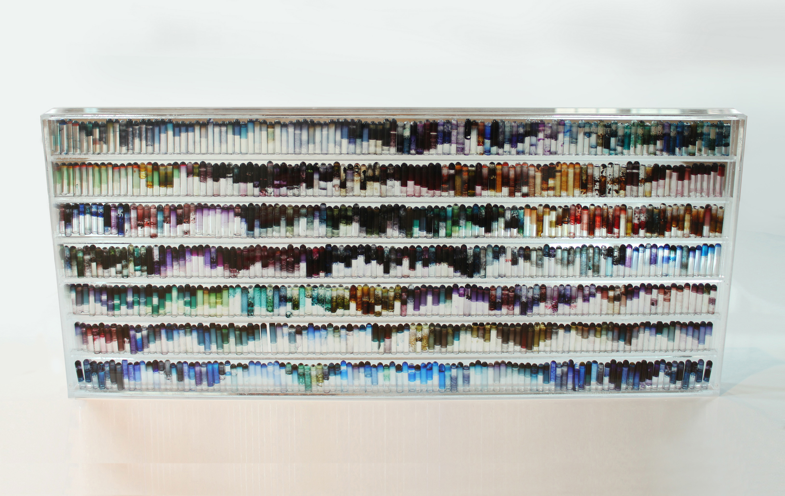
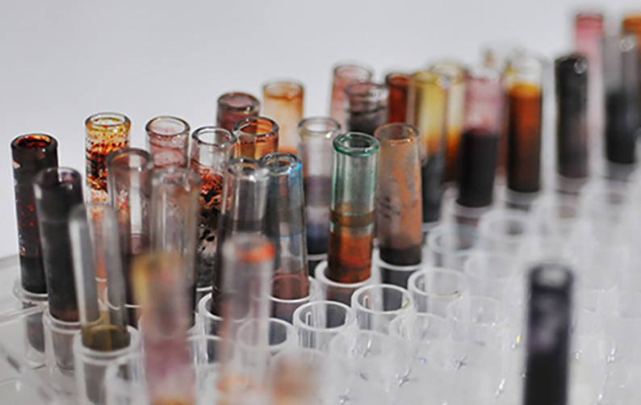

Test Tube Series No.2
Date: 2016
Medium: multiple pigments, test tubes, acrylic
Dimension: 120cm*60cm

Test Tube Series No.5
Date: 2016
Medium: multiple pigments, test tubes, acrylic
Dimension: 120cm*60cm

Test Tube Series No.9
Date: 2016
Medium: multiple pigments, test tubes, acrylic
Dimension: 60cm*30cm

Test Tubes